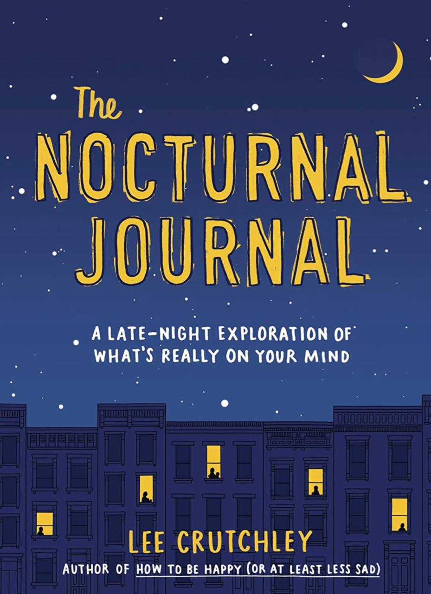

Lee Crutchley is an artist and author from England who is currently
based in Berlin. His previous books have been translated into nineteen
languages, and he is embarrassed to admit that he can only speak one.
Obwohl er sein Bestes gibt, um Deutsch zu lernen.

An engaging and emotionally aware resource for night owls, insomniacs,
and anyone else who finds themselves awake at all hours, The Nocturnal
Journal will help you explore what keeps you up at night, and why.
Prompts and illustrations tease out the pressing thoughts, deep
questions, everyday anxieties, and half-formed creative ideas that need
unpacking and exploring, bringing more peace of mind and a richer
understanding of ourselves. The perfect gift for journal lovers and
anyone seeking emotional wellness, self care, and a clearer mind.